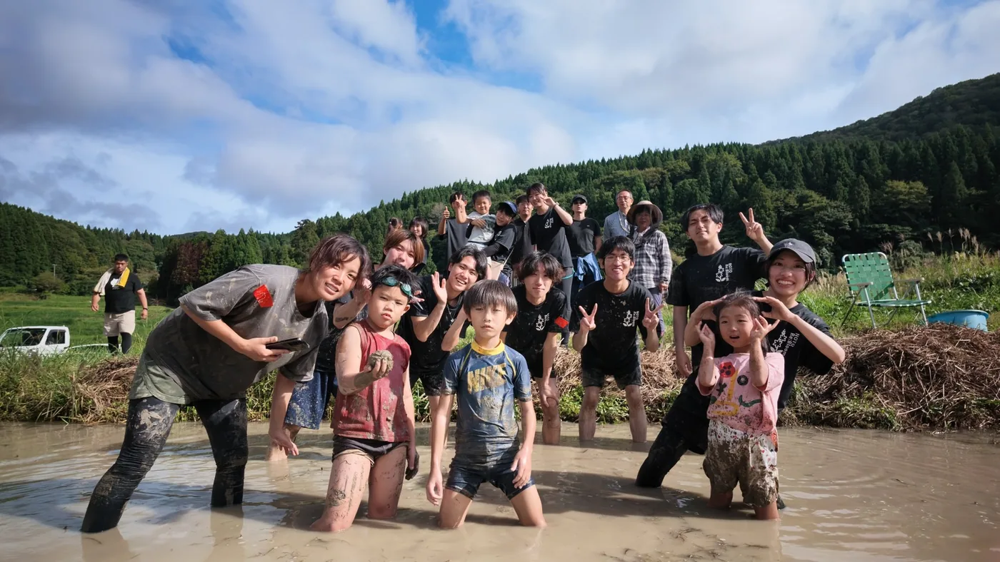

総来場 約30名
競技参加者、見学者、運営などが洲巻の田んぼに集まりました。
2026.9.20SUZU / ISHIKAWA
9月20日、珠洲市若山町洲巻で「泥ん子運動会2026」を開催しました。使われなくなっていた田んぼに人が集まり、5つの泥競技とRe:Bloomレンゲカップを実施しました。
イベントは終了しました ／ 開催前の案内はアーカイブとして残しています

開催結果を30秒でEVENT AT A GLANCE
企画書の中にあった「楽しさを入口に、能登へ関わる理由をつくる」という考えを、一日のイベントとして実施しました。
競技参加者、見学者、運営などが洲巻の田んぼに集まりました。
赤組・白組に分かれ、泥の中で正式競技を楽しみました。
親子お宝ハンター＆玉入れから泥んこドッジボールまで実施しました。
イベントの記憶を持ち帰るRe:Bloomレンゲカップを作りました。
9月20日の記録THE DAY
泥だらけになった参加者の表情、会場となった洲巻の田んぼ、準備を重ねてきた学生メンバー。当日の風景から、この一日を振り返ります。


この日で生まれたことWHAT REMAINS
イベントの成果を人数だけで見るのではなく、土地を知る人が増え、地域・学生・企業や団体とのつながりが残ったことを次へつなげます。
田んぼを「課題のある土地」だけではなく、人が集まる場所として使いました。
子ども、大人、学生、地域の方が同じ田んぼで時間を過ごしました。
義務感だけではない入口から、能登や洲巻を知る機会をつくりました。
今回の経験とつながりを、別の耕作放棄地での次の活動へ引き継ぎます。
COLLABORATION
泥ん子運動会2026の情報発信と学生参加に向け、石川県主催・北國新聞社特別協力の学生プロジェクト「ishimo」と連携しました。
今回できた学生とのつながりを、今後の能登での活動にもつなげていきます。
ishimo公式サイトを見る ↗能登の農地のこと、泥ん子運動会を行う理由、私たちが目指していることをご紹介します。
土地と企画を知る →03 / PARTNER活動を支えてくださる企業・団体の皆さまと、現在の協力内容をご紹介しています。
協賛・協力を見る →クラウドファンディング終了のご報告THANK YOU FOR YOUR SUPPORT
2026年8月15日に終了し、10名の方から合計186,000円のご支援をいただきました。
ご支援を泥ん子運動会2026の実施につなげることができました。結果・活動報告はREADYFORで引き続きご覧いただけます。
クラウドファンディングでいただいたご支援の総額です。
プロジェクトを支援してくださった皆さまの人数です。
これまでと、これからOUR JOURNEY
現地で話を聞き、土地を探し、実際に開催した経験を次の土地へつなげます。
能登の課題と向き合い、使われなくなった農地に目を向けました。
能登へ足を運び、土地の状態や地域の状況を実際に確認しました。
農家さんや地域の方と相談しながら、条件に合う土地を探しました。
約1,000㎡の田んぼをお借りし、9月20日に使用する農地が正式に決まりました。会場地図 ↗
10名の方からご支援をいただき、クラウドファンディングを終了しました。
北國新聞社に加え、MRO北陸放送からも「泥ん子運動会2026」の後援をいただきました。
15:00〜17:00、コワーキングスクエア金沢香林坊で、これまでの活動と翌日の泥ん子運動会について発表しました。
約1,000㎡の田んぼに子どもも大人も集まり、5つの泥競技とRe:Bloomレンゲカップを実施しました。
実施後の記録と地域・学生とのつながりを引き継ぎ、別の耕作放棄地で次の活動を考えます。

WHO WE ARESTUDENT TEAM
土地をお借りする相談から、競技、安全面、協賛、参加募集、当日の運営まで、学生メンバーで一つずつ形にしました。
9月20日の一日を、開催レポートにまとめています。